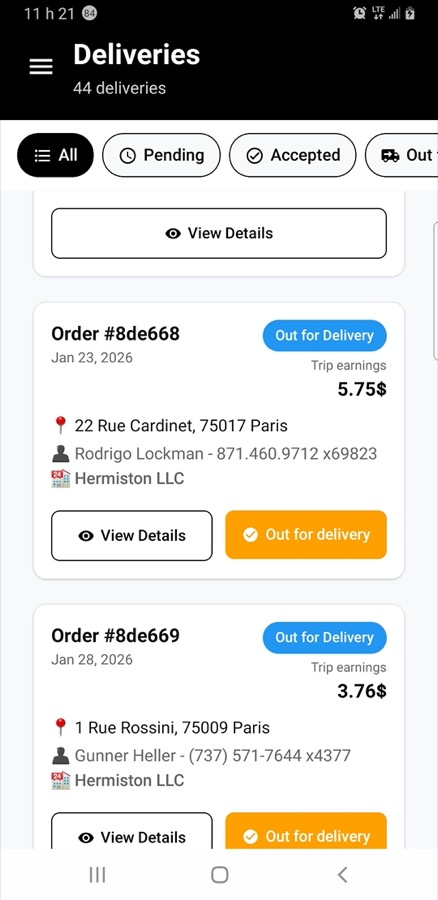
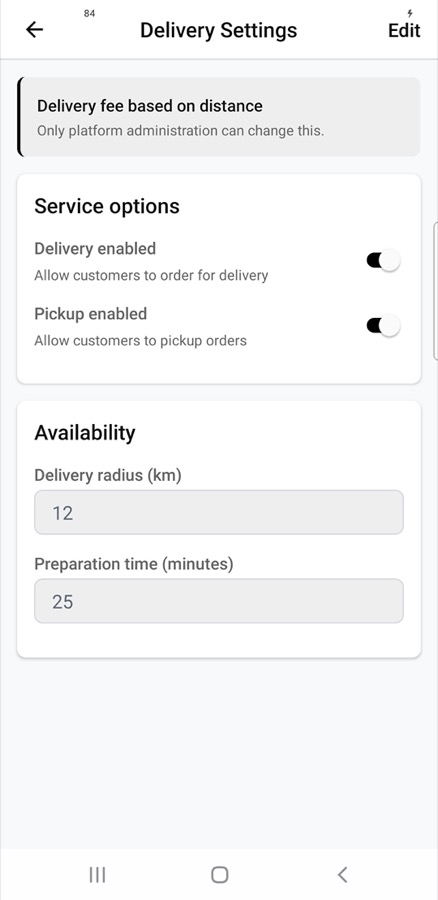
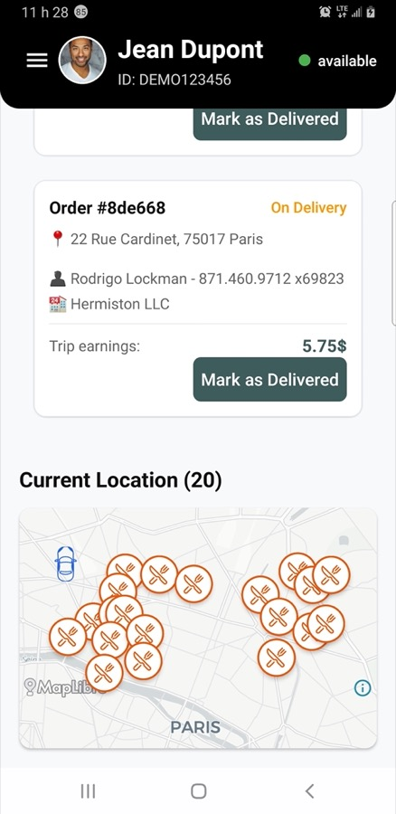
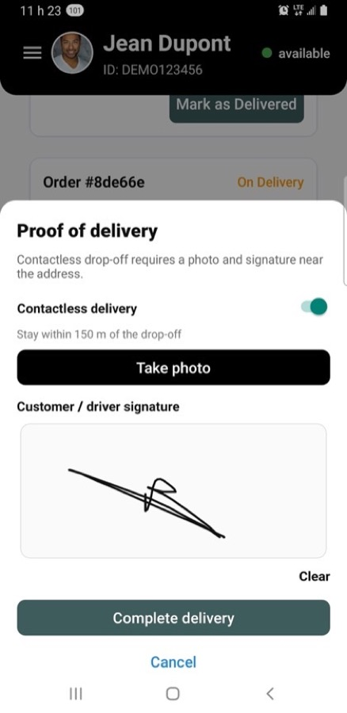
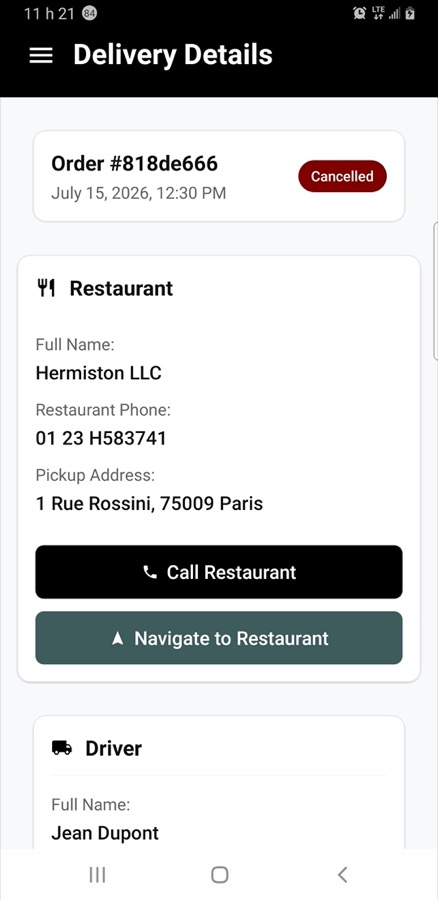

Logistics & proof of delivery
The last mile is where trust is won or lost. Batching, live tracking, and proof at the door turn “order placed” into a city operation you can actually run.
Fewer empty miles, more completed drops
At lunch peak, one bag across town burns time and fuel. Batching surfaces compatible jobs nearby so drivers stack drops. Assignment radius and delivery settings stay under your control — downtown and suburbs should not share one unrealistic rule.

Driver — today’s deliveries

Delivery settings — radius and rules
Follow the order to the door
Customers watch status move from pending to preparing, out for delivery, and delivered — with ETA when available. Drivers keep pickup and drop-off details clear on their side. Fewer “where is my food?” tickets; more repeat orders.
Customer — track order

Map — nearby places and context

Driver — active delivery
Proof when “I never got it” used to win
At the door, drivers can capture a photo and a customer signature. Cash-on-delivery, high-value meals, and gated buildings suddenly have evidence — disputes become conversations with context.

Proof of delivery — photo + signature

Delivery details before drop-off
Pair with Kitchen Display and Monetization for the full operator story.